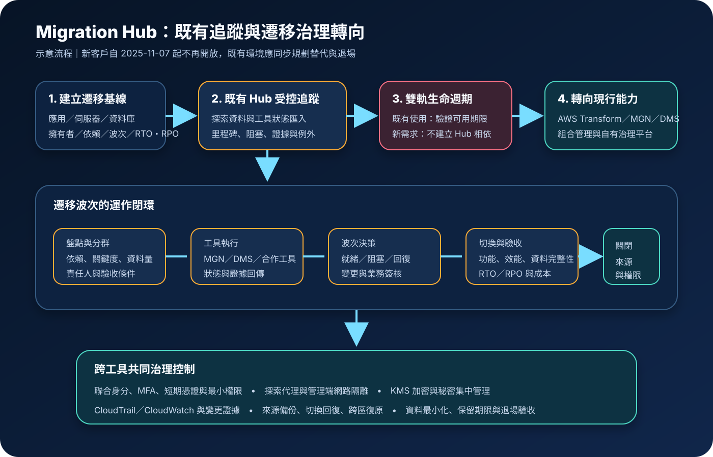

AWS Migration Hub：既有遷移追蹤與治理轉向
AWS Migration Hub 用於集中檢視應用探索資料與遷移工具進度，讓多個伺服器、資料庫與應用波次能在共同視圖中追蹤。AWS 已公告自 2025 年 11 月 7 日起不再開放新客戶使用；因此新架構不應建立對 Migration Hub 的相依，既有客戶則需在可用期間維持受控追蹤、保留必要證據，並把流程轉向 AWS Transform、AWS Application Migration Service、AWS Database Migration Service 或其他現行工具與治理平台。
作者：Dr. William｜查閱與發布：2026-11-27
服務定位
AWS Migration Hub 是遷移組合的中央可視化與追蹤層，不是執行所有遷移的單一搬移引擎。它可彙整探索工具、AWS 遷移服務及支援工具所提供的伺服器與工作進度，協助團隊把資產分組為應用，查看遷移狀態並管理波次。
實際資料複寫、主機搬移、資料庫轉換、網路建置、驗證與切換，仍由 AWS Application Migration Service（MGN）、AWS Database Migration Service（DMS）、合作工具、腳本或其他專案流程執行。Migration Hub 提供視圖，不會自動替組織完成依賴分析、業務簽核、回復測試、資料完整性或來源退役。
核心概念
資產、應用與波次
- 探索資料：蒐集伺服器配置、效能與連線關係，作為範圍估算，不等同完整 CMDB。
- 應用分組：將相互依賴的伺服器、資料庫與元件放入同一業務邊界。
- 遷移波次：依依賴、關鍵度、停機窗口、團隊與風險分批執行。
- 狀態追蹤：彙整遷移工具更新，但仍需定義一致的完成條件與證據。
- Home Region：Migration Hub 的探索與追蹤資料具有區域治理考量，設定前需確認資料位置及帳戶策略。
生命週期與替代能力
- 停止開放新客戶：2025-11-07 起，新帳戶或未使用客戶不可把服務列為新建基線。
- 既有客戶：應確認可用期限、匯出需求、稽核保存與替代里程碑。
- AWS Transform：面向現代化與遷移工作的代理式 AI 服務，可用於部分 VMware、mainframe、.NET 及自訂轉換情境；適用範圍仍需逐案驗證。
- MGN／DMS：分別承接伺服器與資料庫遷移工作，不等同完整組合治理。
- 自有治理層：可由 CMDB、專案平台、資料倉庫或儀表板統一保存狀態、決策與證據。
適合與不適合的使用情境
僅適合既有客戶延續的情境
- 既有大型遷移計畫已以 Migration Hub 建立應用分組、波次與工具狀態，需要在過渡期完成追蹤。
- 多個 MGN、DMS 或支援工具需要共用檢視，但團隊同時具備外部系統紀錄、驗收及退場計畫。
- 遷移辦公室需要把技術進度與業務擁有者、切換窗口、阻塞及回復決策對齊。
- 組織能限制探索資料、IAM 權限、Home Region、保留期限與稽核存取。
不適合或不能單獨完成
- 新客戶或全新遷移治理平台；服務已停止開放新客戶，不應成為目標架構。
- 只需搬移單一主機或小型資料庫，且工具本身已足以追蹤工作；額外治理層可能增加維護成本。
- 需要完整 CMDB、財務模型、應用負責人、合規例外、測試證據與董事會報告；Migration Hub 不能取代企業治理平台。
- 要求自動判斷所有應用依賴、切換成功與資料正確性；探索與狀態只能作為輸入，仍需人工與技術驗證。
- 未定義 IAM 邊界、資料區域、代理網路、日誌保存、來源備份與回復計畫的專案。
- 把中央儀表板顯示「完成」誤認為業務驗收、來源退役與災難復原已完成。
示意故事案例：零售企業完成既有遷移波次並轉換治理平台
以下為示意案例，不代表特定企業或正式部署。 一家零售企業已在 Migration Hub 追蹤 240 台應用伺服器與 18 個資料庫，原計畫以 MGN 搬移主機、DMS 遷移資料庫，並依門市、供應鏈、會員與財務系統分成六個波次。服務生命週期公告後，團隊決定不再擴大相依，保留既有追蹤直到最後兩個波次完成，再把治理紀錄移至內部專案與組態平台。
團隊先指定單一 Home Region，盤點 Migration Hub 中的應用分組、伺服器識別、工具狀態、標籤與遷移波次，並與 CMDB、業務擁有者及實際來源清單交叉比對。管理人員使用企業聯合身分、MFA 與短期角色登入；探索、查看、更新與管理權限分離，任何文件、工單、程式碼或日誌都不保存可重用認證值。
每個波次都定義進入條件、功能測試、效能門檻、資料完整性、RTO、RPO、切換核准與回復條件。MGN 與 DMS 狀態只作為技術證據之一，業務驗收仍由應用負責人簽核。CloudTrail 記錄控制面操作，CloudWatch 與工具日誌監控複寫延遲、錯誤與容量；來源環境在目標驗收、備份及跨區復原測試完成前不會退役。
退場期間，團隊把應用、波次、阻塞、決策、驗收與證據映射至內部治理資料模型；同時對 VMware 與 .NET 工作負載評估 AWS Transform，對伺服器及資料庫持續使用 MGN 與 DMS。替代平台先以一個非關鍵波次進行 PoC，確認狀態語意、API、權限、日誌、成本與報表後，再停止以 Migration Hub 作為主要紀錄來源。

建置或運作流程
- 確認帳戶是否為既有 Migration Hub 客戶；新客戶直接進入替代能力與治理平台選型。
- 由帳戶與專案負責人向 AWS 確認可用資格、Home Region、支援範圍、通知與可用期限。
- 盤點應用、伺服器、資料庫、擁有者、關鍵度、資料敏感度、依賴、RTO、RPO 及停機窗口。
- 建立資產唯一識別與來源真相，避免 Migration Hub、CMDB、試算表與遷移工具使用不同名稱。
- 依業務依賴與風險建立遷移波次，定義進入條件、完成條件、回復條件及簽核人。
- 設定企業聯合身分、MFA 與短期角色，分離探索、檢視、更新、管理及稽核權限。
- 以 IAM 最小權限限制 Migration Hub、Discovery、MGN、DMS、S3、KMS 與日誌資源。
- 探索代理、收集器與管理端放入受控網段，只允許必要出站目的地、DNS、代理與管理連線。
- 限制可收集欄位與保留期限，避免把不必要的個資、秘密、完整連線內容或認證值送入探索資料。
- 如需保存匯出或報表，使用受控 S3 bucket、Block Public Access、版本、生命週期與 KMS 客戶管理金鑰。
- 秘密統一放入 Secrets Manager 或 Parameter Store；禁止在標籤、應用名稱、工單、日誌或指令歷史保存敏感值。
- 連接 MGN、DMS 或支援工具前，驗證角色信任、權限範圍、區域、資源識別與狀態回傳語意。
- 先以非關鍵應用進行探索與狀態同步測試，確認重複資產、遺漏、延遲與錯誤處理。
- 每個波次執行複寫、測試、效能、資料完整性、安全掃描、業務驗收與回復演練。
- 以 CloudTrail 集中記錄管理操作，透過 CloudWatch 與工具日誌監控收集失敗、複寫延遲、錯誤與容量。
- 建立例外流程；任何跳過測試、延長雙寫、保留公開存取或使用長期憑證都需期限與到期重驗。
- 比較 AWS Transform、MGN、DMS、自有 CMDB／專案平台與合作工具，不假設功能可一比一替代。
- 對替代方案做 PoC，驗證匯入、API、狀態模型、權限、稽核、報表、費用與供應商退場能力。
- 匯出必要的應用、波次、狀態、決策與驗收證據，依資料分類設定保留與刪除。
- 完成目標環境備份、跨區復原、監控與成本基線後，再停止來源工作負載。
- 撤除探索代理、暫時角色、網路規則、秘密、工具整合與不再需要的資料副本。
- 由遷移辦公室、安全、應用負責人與稽核共同簽署退場，確認替代平台已成為唯一主要紀錄來源。
成本、可用性與維運考量
AWS Migration Hub 定價頁將服務本身描述為不另收額外費用，但探索、遷移及目標環境使用的服務仍各自計費，例如 MGN、DMS、EC2、EBS、S3、資料傳輸、CloudWatch、CloudTrail 資料事件與 KMS。實際預算還需納入探索代理主機、專線或 VPN、雙環境並行、測試、顧問、授權、停機窗口與內部治理人力。
中央儀表板可降低人工彙整成本，但其可用性不等同遷移工作的可用性。工具狀態延遲、識別不一致、區域設定錯誤或整合中斷，都可能讓視圖與實際工作脫節。關鍵切換不得只依單一控制台判斷，應保留來源工具、監控、測試與業務簽核的多重證據。
轉向替代平台時會產生一次性成本，包括資料映射、API 開發、歷史匯出、權限重建、儀表板、教育訓練與平行驗證。比較工具時應使用同一批資產與波次，量測資料完整度、狀態延遲、人工修正、報表、稽核、授權及退場成本，而不是只比較介面功能。
AWS Migration Hub 特有資安風險與控制
- 停止開放新客戶仍被列入新架構：在服務目錄、架構審查與 IaC 範本加入生命週期門禁。
- 中央視圖暴露完整資產版圖：限制查看與匯出權限，依帳戶、團隊與職責分離可見範圍。
- 探索資料超量收集：先做資料分類與最小化，定義允許欄位、區域、保留與刪除期限。
- Home Region 設定錯誤：在啟用前由資安、法遵與雲端平台共同核准資料位置及跨區影響。
- 探索代理成為內網入口：使用專用服務帳號、網路隔離、端點防護、最小出站規則、版本與完整性驗證。
- 長期 Access Key 或共用帳號：採聯合身分、MFA 與短期憑證；工作負載使用角色，不建立可重用靜態秘密。
- 工具整合角色權限過廣：限制 API、資源、區域與條件，定期以 IAM Access Analyzer 與存取紀錄縮權。
- 應用名稱或標籤含秘密：禁止把 credential、Access Key、Secret Key、Token、密碼或 cookie 寫入中繼資料；必要顯示一律使用 [REDACTED]。
- 狀態回傳被誤當驗收：完成條件必須包含功能、效能、資料完整性、安全、業務簽核與回復證據。
- 重複或錯誤資產造成漏遷：建立唯一識別，與 CMDB、DNS、帳單、監控及來源清單交叉比對。
- 管理操作缺乏稽核：集中 CloudTrail，對敏感角色、設定變更、匯出及刪除建立 CloudWatch 告警。
- 報表或匯出公開存取：S3 啟用 Block Public Access、KMS 加密、最小 bucket policy、版本與生命週期。
- 秘密散落於整合流程：使用 Secrets Manager／Parameter Store，自動輪替並限制讀取路徑。
- 切換失敗卻已關閉來源：來源保留至驗收完成，預先測試 DNS、資料回復、流量回切與操作通訊。
- 只做同區備份：依業務需求建立跨帳戶或跨區備份，測試 RTO／RPO 與第二區域存取。
- 替代平台未驗證就退場：平行運行至少一個波次，比對狀態、證據、權限、費用與故障處理。
- 歷史資料無限保存：依稽核與法律要求設定保留期限，退場後刪除不再必要的探索與匯出資料。
- 第三方工具責任不清：審查資料處理、支援人員存取、子處理者、事件通報、刪除證據與合約退場條款。
共同責任邊界
AWS 負責 Migration Hub 服務與 AWS 管理基礎設施的安全、服務端控制能力，以及官方生命週期與文件公告。AWS 也維護 MGN、DMS、AWS Transform 與其他受管服務各自的服務邊界，但不替客戶定義應用關鍵度、遷移波次、資料分類、完成條件或退場時程。
客戶負責帳戶與 Home Region 選擇、IAM 最小權限、MFA／短期憑證、探索代理與網路隔離、公開存取限制、KMS 加密、Secrets Manager／Parameter Store、CloudTrail／CloudWatch、資產與依賴正確性、業務驗收、來源備份、切換回復及跨區復原。中央視圖可顯示狀態，但遷移是否安全、完整且可復原，仍由客戶驗證。
上線、運作與退場可執行檢查清單
- □ 已確認帳戶是既有客戶或新客戶；新客戶未把 Migration Hub 納入目標架構。
- □ AWS 已確認 Home Region、帳戶資格、支援範圍、通知與可用期限。
- □ 應用、伺服器、資料庫、擁有者、依賴、RTO、RPO 與停機窗口已盤點。
- □ Migration Hub、CMDB、MGN、DMS 與專案平台使用一致的資產識別。
- □ 每個遷移波次都有進入、完成、回復條件與業務簽核人。
- □ 管理存取採聯合身分、MFA、短期角色與職責分離。
- □ 探索與工具整合 IAM 只允許必要 API、資源、區域及條件。
- □ 探索代理位於隔離網段，端點、版本、出站目的地與服務帳號均受控。
- □ 探索資料已執行最小化、區域審查、保留期限與刪除規則。
- □ 匯出使用受控 S3、Block Public Access、KMS、版本與生命週期。
- □ Secrets Manager／Parameter Store 已取代程式碼、標籤、工單與日誌中的秘密。
- □ 文件、指令、程式碼、日誌與聊天沒有任何實際 credential、Access Key、Secret Key、Token、密碼或 cookie。
- □ CloudTrail、CloudWatch、MGN／DMS 日誌與業務驗收證據已集中保存。
- □ 完成狀態同時包含功能、效能、資料完整性、安全與回復測試。
- □ 來源環境在目標驗收、備份及復原演練前不會提前關閉。
- □ 關鍵工作負載具備跨帳戶或跨區備份，且 RTO／RPO 演練通過。
- □ AWS Transform、MGN、DMS、自有治理平台與合作工具已完成適用性比較。
- □ 替代方案已以非關鍵波次驗證 API、狀態、權限、稽核、費用與故障處理。
- □ 必要歷史資料與決策證據已匯出，並套用保留及刪除政策。
- □ 探索代理、暫時角色、整合秘密、網路例外與重複資料已撤除。
- □ 替代平台已成為唯一主要紀錄來源，且遷移辦公室、安全與應用負責人已簽核。
AWS 官方一手來源
- AWS Migration Hub FAQs（查閱：2026-11-27）
- What is AWS Migration Hub?（查閱：2026-11-27）
- Security in AWS Migration Hub（查閱：2026-11-27）
- Logging AWS Migration Hub API calls with AWS CloudTrail（查閱：2026-11-27）
- AWS Migration Hub regions and Home Region（查閱：2026-11-27）
- AWS Migration Hub Pricing（查閱：2026-11-27）
- AWS Transform（查閱：2026-11-27）
- What is AWS Application Migration Service?（查閱：2026-11-27）
- What is AWS Database Migration Service?（查閱：2026-11-27）
- AWS Shared Responsibility Model（查閱：2026-11-27）
內容說明
本文依 2026-11-27 可查閱的 AWS 官方文件整理。Migration Hub 已自 2025-11-07 起停止開放新客戶；既有客戶的可用期限、功能、區域、整合、價格與轉向安排可能持續調整。正式遷移或退場前，應以 AWS 對目標帳戶與區域的最新確認、PoC、資安審查、費用估算、業務驗收及復原演練為準。